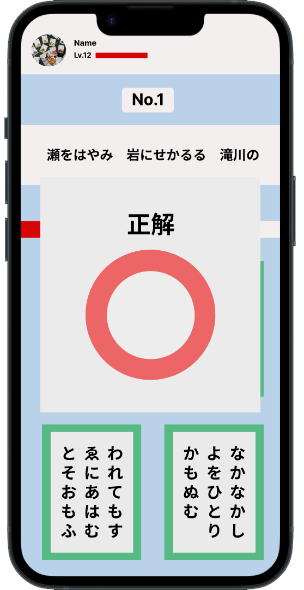
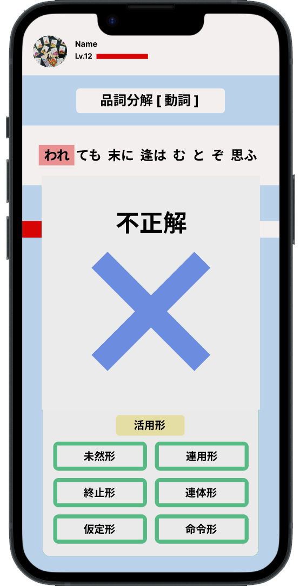

『 百人一首 × 古典 』
このアプリケーションのターゲットは、古典の初学者＆苦手としている高校生
古典が苦手な学生にとって
古典単語の意味を覚えたり、文法や活用形を覚えたりすることは簡単ではありません。
また、それらの知識を定着していても、実際の文章を解読することは難しいです。
そのため、" 古典は文系理系問わず苦労する学生が多い分野 "といえます。
そんな古典を「百人一首」で効率的に楽しく覚えませんか？
なぜ、古典学習に百人一首？
百人一首のメリットとして…
親しみやすい、古典常識、和歌、古典のリアル等が挙がります。
幅広い様々な人々が"三十一音"という短い世界に自らの心情を詠んでいます。
その多すぎない手頃な分量、古典の苦手な学生が苦労しがちな和歌という形式
そして、内容の秀逸さ。今の私たちにも共感できる心情がたくさん詰まっています。
これらを考えると"百人一首"は古典学習に抜群な教材であるといえると私たちは考えました。
従来の百人一首を用いた学習方法は
文法の解説が不十分で、ただやみくもに暗記するだけになっています。
→文法事項を充実＆隙間時間にできるゲーム形式のアプリケーション
「百人一首で学ぶ古典」の使い方
STEP1 スタート画面＆ジャンル選択
最初にスタートボタンを押して、始めよう！
次の画面で好きなジャンルを選ぼう！
STEP2 ゲームスタート！
通常の百人一首→品詞分解 動詞→助動詞→古典単語の順番で問題に答えていく形式
（※全10 問あります）
問題に対する答えの選択肢を押すと、すぐに正解or不正解が分かります！
 STEP3 他ユーザーと繋がれる！コメント機能！
自分のお気に入りの歌があれば"いいね"と"コメント"をしよう！
友達との日常会話ではなかなか話題にならない百人一首。
一緒に古典を学習している学生と自分の想いや考えを共有して、横の繋がりを広げませんか？